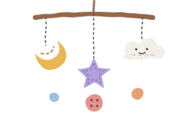
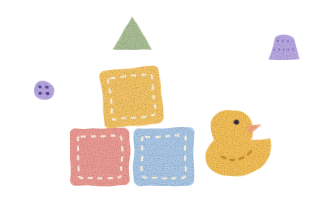

Day nursery in Wanstead, E11 6 months to 5 years
Home from home, with more paint.
Button Tin is a small, independent nursery in a Victorian house on Teasel Grove. Forty children, three cosy rooms, a garden with a mud kitchen, and a cook who knows every child's favourite lunch.
Open Monday to Friday, 8am to 6pm

- 6 months to 5babies to pre-school
- 40 childrenin three small rooms
- 8am to 6pm51 weeks a year
- Funded hoursfrom 9 months old
Our rooms
Three rooms, one home
Children move up when they are ready, not on a birthday. Each room has its own key people, and the same faces greet your child every morning.
-

Baby room, 6 months to 2 years
Bobbins
A calm, sunny room on the ground floor with its own sleep room and a little garden just for babies. Babies keep their own routines for feeds and naps.
£92 a full day, £46 a half day
-

Toddler room, 2 to 3 years
Thimbles
Busy, messy and full of words. Lots of sand, water, paint and singing, and gentle help with potty training when your child is ready.
£88 a full day, £44 a half day
-
Pre-school room, 3 to 5 years
Patchwork
Bigger projects, longer stories and first steps in sounds and numbers, so children feel ready and proud when they start Reception.
£84 a full day, £42 a half day
A day at Button Tin
Breakfast to home time
The day has a gentle rhythm, so children know what comes next. In between there is lots of time to play, get muddy and rest.
- 8amArrival
- 8:15amBreakfast
- 9amFree play
- 10:15amOutdoor time
- 11:30amLunch
- 12:30pmNap and quiet time
- 2pmActivities
- 3:45pmTea
- 4:30pmHome time
Doors open at 8am, Monday to Friday. Collection is any time until 6pm.
Fees
Plain prices, and funded hours from 9 months
You pay by the hour for the sessions you book. Food and nappies are listed separately and are always optional. There is no registration fee and no deposit.
Meet the team
The people your child will know by name
Most of our team have been with us for years. Each child has a key person, who settles them in, gets to know them best and is your first point of contact.
- Our team: Bryony (manager and designated safeguarding lead), Kwame (deputy manager), Lidia (Bobbins), Sunita (Thimbles), Ciara (Patchwork and SENCo) and Desmond (cook).
Safeguarding and wellbeing
Safe, settled and happy, in that order
Keeping children safe is everyone's job here, every day. This is a short summary: our full safeguarding, sleep, medicines and complaints policies are in the parents' folder in the hall, and we will email any of them to you.
-
A named safeguarding lead
Bryony is our designated safeguarding lead and Kwame is her deputy. One of them is always in the building.
-
A key person for every child
Someone who knows your child's moods, words and routines, and notices when something is not right.
-
Careful recruitment
Enhanced DBS checks, two references we follow up, and safeguarding training for everyone, every year.
-
Phones in lockers
Staff phones stay locked away. Photos are taken only on nursery tablets and shared with you privately.
-
Safer sleep and first aid
Babies sleep on their backs in their own cot, always within sight and hearing. Staff with full paediatric first aid are in every room.
-
Safe hand-overs
A locked front door with a camera. Children go home only with adults you have named, and anyone new needs your password.
Worried about a child?
Talk to Bryony or Kwame straight away, in person or on 020 7946 0283. You can also contact the council's children's services or the NSPCC. If a child is in danger right now, call 999.
Ofsted inspection (example only)
This panel shows where a nursery's latest Ofsted report card goes. Button Tin is made up, so there is no real grade or reference number here.
- SafeguardingMet or not met
- InclusionGrade goes here
- Curriculum and teachingGrade goes here
- AchievementGrade goes here
- Behaviour, attitudes and routinesGrade goes here
- Children's welfare and wellbeingGrade goes here
- Leadership and governanceGrade goes here
Ofsted's grades, from highest: exceptional, strong standard, expected standard, needs attention, urgent improvement.
What Ofsted inspects. Ofsted checks that a nursery keeps children safe and meets the Early Years Foundation Stage (EYFS) rules. An inspector spends the day with us, watches children play and learn, talks to staff, children and parents, and checks records such as staff checks, first aid and accidents. Since November 2025, nurseries get a report card with a grade for each area instead of one overall word.
You can read any nursery's reports on the Ofsted website: search by its name or postcode.
Find inspection reports on OfstedLook around
Inside the house
The best way to see Button Tin is to visit. Until then, here is a peek. These tiles show where the nursery's own photos go.
- The garden and mud kitchenThe nursery's own photo goes here.
- Bobbins, the baby roomThe nursery's own photo goes here.
- The art table in PatchworkThe nursery's own photo goes here.
- Lunch at the big tableThe nursery's own photo goes here.
Questions
Things parents ask us
Anything else? Send us a message, or ask on your show-round.
How long is the waiting list?
It depends on the room and the days. Mondays and Fridays are easiest to find. Many families join the list during pregnancy or soon after. Join with your preferred days and we will tell you honestly when a place is likely.
Can we look round first?
Please do. Show-rounds are on Tuesdays and Thursdays at 9:30am or 2pm, and take about 40 minutes. Bring your child if you like. You can ask for one on the waiting-list form.
Do you take funded hours?
Yes: the 30 hours for eligible working parents from 9 months, the 15 hours for every 3 and 4 year old, and the 15 hours for 2 year olds whose families get extra support. You can take them in term time or stretched across the year. The fees page explains how they work.
If we use funded hours, do we have to pay for food and nappies?
No. Food, nappies, music and trips are optional extras, and your funded place never depends on paying for them. You can send a packed lunch and your own nappies instead, and your child joins in with everything else as normal.
My child has an allergy or additional needs. Can you help?
Yes. Before your child starts we write an allergy plan or a support plan with you, and every member of staff learns it. Ciara, our SENCo, works with families, health visitors and therapists, and support during funded hours is never charged extra.
What happens if my child is unwell?
We call you if your child becomes unwell at nursery. After sickness or diarrhoea, children stay home until 48 hours after the last episode. We can give prescribed medicine with your written permission.
Can we change our days later?
Usually, yes. Tell us a month ahead and we will do our best. Adding days depends on space in the room.
How will I know how the day went?
A chat with the key person at pick-up, a short daily note in our parent app (meals, naps and nappies for little ones) and photos now and then. Twice a year we sit down with you to talk about your child's progress.
What notice do we give when we leave?
One month, in writing (an email is fine). Most children leave in the summer before they start Reception, and we help with the move to school.
Visit us
Opening hours and how to find us
Opening hours
Open Monday to Friday, 8am to 6pm
- Monday to Friday
- 8am to 6pm
- Saturday and Sunday
- Closed
Open 51 weeks a year. We close on bank holidays, between Christmas and New Year, and for one staff training day in February. We never charge for days we are closed.
Coming up
- 24 December to 1 JanuaryChristmas and New Year
Come and see us
14 Teasel Grove, Wanstead, London E11. Five minutes' walk from Wanstead station on the Central line, with buggy parking by the front door.
Show-rounds on Tuesdays and Thursdays at 9:30am and 2pm.
Open Wanstead in Google Maps (our street is made up, so the map shows the area).